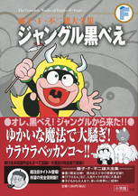

| |

＜小学一年生〜小学五年生、
よいこ、幼稚園、
毎日新聞大阪版掲載集＞
定価：本体1,200円＋税
A5判／290ページ
好評発売中！
★は初めて単行本に収録される
作品です。
※収録内容は変更になる
場合があります。

|
★ネズミをやっつけろ（小一73年03月号）
★どろぼう退治（小一73年04月号）
くじらをつろう（小一73年05月号）
だいじなお客（小一73年06月号）
★おじさんのすいか（小一73年07月号）
ピリミー式セミ狩り（小一73年08月号）
★パパが会社に遅れちゃう（小一73年09月号）
犬になろう（小一73年10月号）
魔法「早起き鳥」（小一73年11月号）
洗面器でさかなつり（小一73年12月号）
★魔法で雨降らす（小二73年03月号）
魔法で絵をうまくする（小二73年04月号）
よくきく薬（小二73年05月号）
★葉っぱをお金に（小二73年06月号）
赤くてあまいスイカ（小二73年07月号）
たたみで水泳（小二73年08月号）
勉強の見はり番（小二73年09月号）
タイガーからのプレゼント（小二73年10月号）
ごはんをまもる！（小二73年11月号）
★洋服を贈ろう（小二73年12月号）
★黒べえのはねつき（小二74年01月号）
ウラウラベッカンコ（小三73年03月号）
べんとうまにあった（小三73年04月号）
魔法の力でいい天気（小三73年05月号）
引っこしでアルバイト（小三73年06月号）
のばす魔法（小三73年07月号）
★黒べえの初恋（小三73年08月号）
魔法の花火（小三73年09月号）
★さわるだけで水出る（小三73年10月号）
★黒べえちゃんがやって来た（小四73年03月号）
ハイキングってなんだ？（小四73年04月号）
黒べえ戦う（小四73年05月号）
ステレオ大すき（小四73年06月号）
一万円札の手品（小四73年07月号）
魔法のランプ（小四73年08月号） |
アフリカからオーム虫（小四73年09月号）
★おーいマッチ（小四73年10月号）
ドロボウつかまえた（小四73年11月号）
サンタさんがやってくる（小四73年12月号）
★ピリミーの黒べえ（小五73年03月号）
二本足のゾウ（小五73年04月号）
およめさんにはブタ五頭なのだ（小五73年05月号）
魔法をつかってさあ出発（小五73年06月号）
黒べえお手伝い（小五73年07月号）
大こう水がくるぞ（小五73年08月号）
地しんよこいこい!?（小五73年09月号）
恐怖ののろい人形（小五73年10月号）
タイガーに決とう状（小五73年11月号）
さよなら黒べえ（小五73年12月号）
★そらとぶ魔法（よいこ73年03月号）
★黒べえのおつかい（よいこ73年04月号）
★たべものとんでこい（よいこ73年05月号）
★おうちのおうま（よいこ73年06月号）
★ふしぎなたなばた（よいこ73年07月号）
★黒べえのいえ（よいこ73年08月号）
★おつかいペット（幼稚園73年04月号）
★どっちへいこう（幼稚園73年05月号）
★まほうのみずでっぽう（幼稚園73年06月号）
★黒べえの昼寝（幼稚園73年07月号）
★やさしいイヌ（幼稚園73年09月号）
★きのこのまほう（幼稚園73年10月号）
★おむかえ（毎日新聞大阪版73年2月3付）
★にらめっこ（毎日新聞大阪版73年2月10付）
★魔法でゴミ出し（毎日新聞大阪版73年2月17付）
★ぼうしをかぶりたい（毎日新聞大阪版73年6月9付）
★魔法で数をふやす（毎日新聞大阪版73年6月16付）
★花火!?（毎日新聞大阪版73年6月23付）
★トンボをおっかけろ
（毎日新聞大阪版73年6月30付）
★カネのなる木（毎日新聞大阪版73年7月14付） |